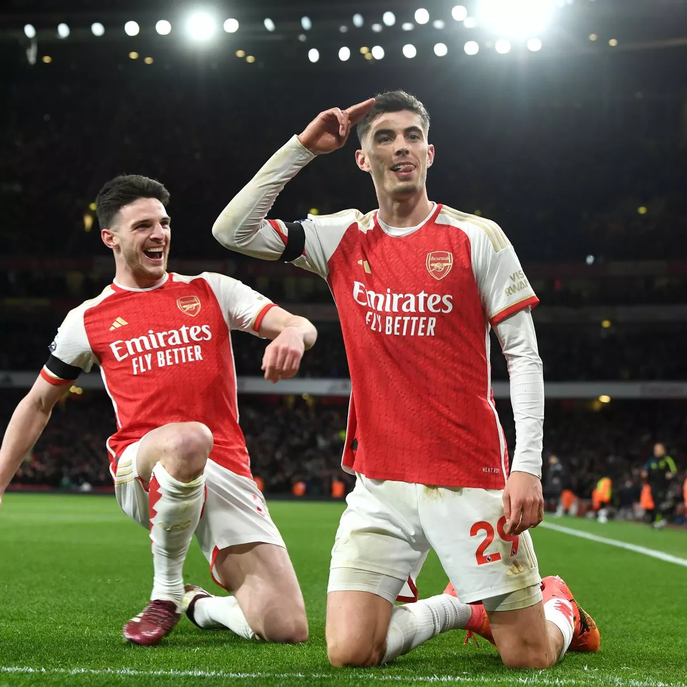

The Signings of Declan Rice and Kai Havertz

Declan Rice
In the beginning of 2023, Arsenal was the buyer of the most expensive player in the history of the Premier League, signing Englishman Declan Rice from West Ham United for $130 million. This signing shored up the Arsenal midfield, considering that Declan is one of the best midfielders in the league, and it hardly ever injured. Declan Rice has proven himself to be an invaluable player for Arsenal, despite his price tag!
Kai Havertz
The second most expensive signing in Arsenal's history was the signing of Kai Havertz for $90 million from Chelsea FC in the second half of 2023. Most fans were unhappy with this purchase mostly due to the price tag and because Havertz was consistenly under-performing at Chelsea. Under boss Mikel Arteta, Kai Havertz' career has been completely revamped and he is one of our key starting players!
Arsenal will need to continue to build up its squad depth to compete with Manchester City and other international clubs, so we shall see how much money we are willing to spend!